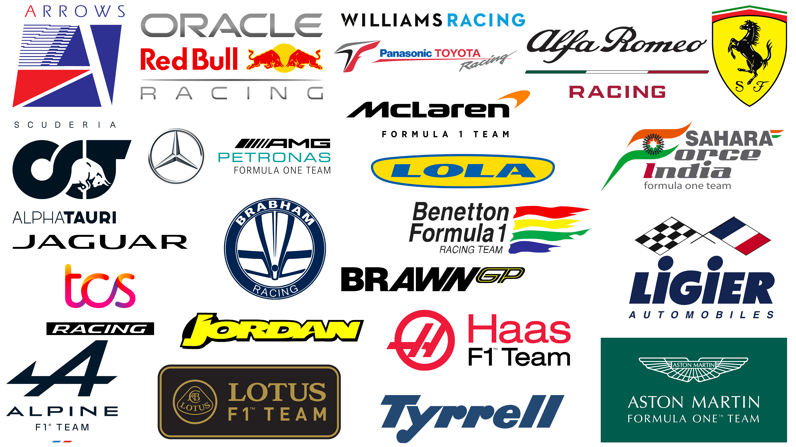

FIT2179 ・ DATA VISUALISATION II ・ SAMANTHA MATTHEWS ・ 36157465
Mapping Formula 1 Success
Formula 1 - or more commonly known today as F1 - is the highest level of international motorsport, combining
elite driving talent, advanced
engineering, and global competition. Since the championship began in 1950, certain
countries have
consistently played a dominant role in shaping the sport’s history and success. European nations,
particularly the United Kingdom and Italy, have been central to Formula One through their long-standing
racing traditions, successful teams, iconic circuits, and world championship-winning drivers.
However, as the sport expanded across oceans and continents, new circuits, drivers, and constructors have
joined from across the globe. Have these international additions been able to rival the European
dominance
that was seen for so long?
THE CIRCUITS
The circuits of Formula One reflect the global expansion of the sport, while also highlighting the
countries that have historically played the biggest role in its development. European nations such
as Italy, United Kingdom, Monaco, and Belgium have hosted some of the most iconic and long-running
races in Formula One history, including legendary circuits that remain central to the championship.
Over time, the calendar has expanded across Asia, the Middle East, the Americas, and Oceania,
demonstrating the growing international popularity of the sport.
From high-speed straights and tight street corners to dramatic elevation changes and unpredictable
weather conditions, each track presents unique challenges for drivers and teams. Over the decades,
the championship has evolved from traditional European tracks to a global calendar featuring modern
purpose-built venues and legendary street races, reflecting the growth and international appeal of
the sport.
A Global View of F1 Circuits
The European origins of the sport are evident in the geographical cluster of circuits throughout central
Europe. Not only does Europe house the greatest number of circuits, but it is also the only continent
with circuits that have been used >50 times, such as the Monza and Monaco circuits. This is expected as
such circuits are rooted in the sports history, which many newer circuits are not.
Despite this, the globalisation of F1 is evident with the spread of circuits across all continents.
Whilst the costs associated with holding a Grand Prix are in the tens of millions, these cities are
incentivised by the international exposure and influx of tourism.
hint: click on a circuit to see more information on it below!
Geographical Distribution of Circuits over Time
When looking at both the number and whereabouts of the circuits present in a season, it is clear
that much has changed since the first year of F1.
Whilst fluctuating over the years, there is a clear positive trajectory in the number of races
in a year, starting with only 7 in 1950, and increasing to 24 since then.
Additionally, the representation of continents in race locations has also fluctuated, with some
continents only being present in earlier years (like Africa), and others only in later years
(such as Oceania).
In an F1 season, a new race almost always beckons a new location, requiring teams to travel from circuit
to circuit. As established above, the number and locations of circuits has fluctuated over the years,
with tracks being added and swapped often. Nevertheless, many tracks have been present for a large
proportion of seasons, so are there any circuits that have been consistently consecutive over many
years?
Flow of Teams from Circuit to Circuit
It appears that certain routes have become popular over time within the F1 calendar. Despite the large
array of circuits that have been used over the years, many routes between circuits have been used
greater than 10 times. For example, Albert Park and Sepang have appeared consecutively
in the F1
calendar 14 times, whilst the route from the Hockenheimring to the
Hangaroring has been used 27 times.
Whilst we must remember that some circuits have been used considerably more than others, there are no
doubt trends in the flow from circuit to circuit over the seasons.
hint: move the cursor near circuits to see the incoming and outgoing flows and filter flows below!
THE DRIVERS
The drivers of Formula One come from a wide range of countries, combining skill, precision, and
strategy to compete at the highest level of motorsport. Countries such as the United Kingdom,
Germany, Brazil, and France have consistently contributed world champions and race-winning drivers
throughout different eras of the sport.
Driver nationalities often reflect the regions with strong motorsport traditions, investment in
racing development, and established junior pathways. Examining the countries represented by drivers
helps reveal how Formula One has evolved from a predominantly European competition into a truly
international sport.
F1 Driver Nationalities
British drivers make up the largest proportion of drivers that have been seen in
F1, a clear result of the established motorsport industry in Europe, providing greater opportunities
to aspiring drivers.
Contrastingly, American drivers are close behind Britain, with 158 races heralding
from the United States. This hints towards the long-standing involvement of the United States within
F1, as was seen with the continuous usage of North American circuits throughout the sports history.
Dominant Driver Nationalities
Looking closer at the top 10 driver nationalities further establishes the strong connection
between Europeans and the sport.
The British and American drivers no doubt make up the largest proportion of racers seen
throughout
the sports history. However, the driver lineup can change drastically from year to year, with a
limited number of seats available putting pressure on drivers to perform.
Below, we will consider these trends over time, investigating how the representation of
continents
with the drivers has changed over time. Are international drivers now able to access greater
resources that enable them to rival their European and American counterparts?
Continent Representation in Drivers over Time
Despite the internationalisation of the sport over time, European drivers remain dominant in the
sport, making up on average over 50% of the grid. In fact, there was a more even distribution in the
earlier years of the sport, including African representation, which ended in the mid 80s. In recent
years, the distribution has stabalised, even with the increase in seats on the grid.
Driver Dashboard
Moving on from looking at all drivers, we will now investigate the most successful individuals in the
sport. As we have just seen, Europeans have always made up a large proportion of the driver pool in F1,
so it is no surprise that they are represented in the top 10 drivers. Amongst the drivers with the most
Grand Prix wins, only one driver - the Brazilian Ayrton Senna - does not come from a European
country.
hint: click on a driver to see their wins per active season!
The Constructors
The constructors of Formula One – responsible for designing and developing the cars competing in
the
championship – are heavily concentrated in a small number of countries that have strong
automotive
and engineering industries.
The United Kingdom has historically been the dominant hub for Formula One teams, with many
successful constructors operating from “Motorsport Valley” in England. Other influential nations
include Italy, known for iconic manufacturers and racing heritage, as well as Germany and
France,
which have contributed major manufacturers and technical innovation to the sport.
The concentration of constructors in these countries highlights the importance of engineering
expertise, industrial infrastructure, and long-standing motorsport culture in Formula One
history.

Origins of F1 Constructors
As described above, there is a strong and established automotive industry within Europe, accounting for
the high number of teams from Europe. Nonetheless, many other countries have tried their hand at
developing a team.
click on a circuit to see more information on it below
European Team Proportion of Total F1 Constructors
Representing over 70% of the 212 constructors seen throughout F1 history, European teams
dominate
the competition.
Whilst we have seen that the European teams make up a large proportion of the F1 grid, let's see if that
translates to success. Each season, constructors compete in the Constructors Championship, with each
race an opportunity to earn points.
Below, we will investigate the teams with the greates number of Grand Prix wins (left), and how their
success has fluctuated over time, as teams gain advantages over eachother through their innovation
(right).
Constructors with Greatest Grand Prix Success
As the oldest constructor, competing in every F1 season since 1950, it's no surprise that
Ferrari holds the highest number Grand Prix wins.
Top Constructors Accumulated Success
Throughout F1 history, it can be seen that Europeans make up a dominant proportion of the
drivers on track. Other continent representation fluctuates drastically, such as a peak of
African drivers in the 60s and of North American drivers in the 50s.
Distribution of Contructor Championship Results
Finally, we will investigate individual teams' results in the Constructors Championship.
Some teams, such as Ferrari, have a long history of success, almost always finishing at the top
of the leaderboard. Others, especially unestablished teams, may struggle to ever succeed. This
is exacerbated by the consequences of winning, with successful teams rewarded with sponsers,
expertise and reputation, only furthering the divide between the top and bottom.
However, as
rules regarding the cars change, and driver lineups alter, this can open up opportunities for
previously struggling teams.
Formula 1's rich European history is cemented throughout the whole sport. Nonetheless, global
diversification is particularly apparent in the circuits and drivers of recent seasons. However, the
constructors remain dominated by European teams, with newer teams struggling to rival those with years of
expertise and immense resources. As the sport continues to gain worldwide momentum, these trends may yet
change, or will F1 remain dominated by Europe?
Acknowledgements
This visualisation used the following datasets; F1 World Championship (1950-2024), Country-Continents , and Natural Earth Data.
Images were obtained from pngwing.
This visualisation was created by Samantha Matthews, for Data Visualisation II (FIT2179), 5/26.
.png)